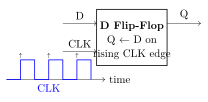
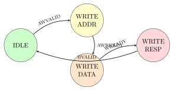

Chapter 2: Digital Design Fundamentals¶
Before writing a single line of hardware code, you need to understand how digital circuits work. This chapter builds the foundation from the ground up — no prior electronics knowledge is assumed.
2.1 Binary Numbers — Everything Is 0 or 1¶
A digital circuit deals exclusively with two voltage levels, which we call 0 (low, false, ground) and 1 (high, true, supply voltage). A group of \(n\) binary digits (bits) can represent \(2^n\) distinct values.
| Bits | Number of values | Example range |
|---|---|---|
| 1 | 2 | 0 to 1 |
| 4 | 16 | 0 to 15 |
| 8 | 256 | 0 to 255 |
| 16 | 65,536 | 0 to 65,535 |
| 32 | 4.3 billion | 0 to 4,294,967,295 |
Analogy: Binary as a Light Switch
A single bit is like a light switch — it is either ON (1) or OFF (0). A byte (8 bits) is like a row of 8 switches. The pattern 0100_0001 (reading left-to-right, most-significant to least-significant) represents the decimal number 65, which also happens to be the ASCII code for the letter ‘A’. Most of digital design is simply arranging and manipulating these switches with very precise timing.
2.2 Logic Gates — The Building Blocks¶
Logic gates are the simplest circuits. Each gate takes one or more binary inputs and produces one binary output.
| Gate | Symbol | Behaviour |
|---|---|---|
NOT |
A | Flips the bit: 0->1, 1->0 |
AND |
A & B | Output is 1 only if both inputs are 1 |
OR |
A | B | Output is 1 if at least one input is 1 |
XOR |
A ^ B | Output is 1 if inputs differ |
NAND |
(A & B) | NOT AND (universal gate) |
NOR |
(A | B) | NOT OR (universal gate) |
Why NAND is Special
A NAND gate is called a universal gate because you can build any other logic gate using only NAND gates. This is why CMOS transistor-level logic is typically implemented as cascaded NAND/NOR pairs. In practice, standard cell libraries (like Sky130) provide hundreds of gate variants pre-characterised for area, power, and timing.
2.3 Combinational vs. Sequential Logic¶
This is one of the most important distinctions in digital design:
2.3.1 Combinational Logic¶
The output depends only on the current inputs. There is no memory.
// A 4-bit adder --- pure combinational logic
module adder4 (
input logic [3:0] a, b,
output logic [4:0] sum // 5 bits to hold carry
);
assign sum = a + b; // No clock, no state
endmodule
Examples: adders, multiplexers, decoders, comparators.
2.3.2 Sequential Logic — The Flip-Flop¶
A flip-flop (FF) is a 1-bit memory element. It captures the value of its input (D) at the rising edge of a clock signal (CLK) and holds it until the next rising edge. This is the atom of state in digital design.

module dff (
input logic clk,
input logic rst_n, // active-low reset
input logic d,
output logic q
);
always_ff @(posedge clk or negedge rst_n) begin
if (!rst_n)
q <= 1'b0; // Reset to 0
else
q <= d; // Sample D on rising clock edge
end
endmodule
Active-Low Reset Explained
rst_n means “reset, active low”. The _n suffix is a hardware convention indicating the signal does its job when it equals 0 (not 1). So if (!rst_n) means “if reset is asserted”. This is because in CMOS circuits, pulling a signal low is faster and more reliable than driving it high.
2.4 Registers and Shift Registers¶
A group of flip-flops working together forms a register. A 32-bit register stores a 32-bit word. This is how a CPU stores the value in each of its general-purpose registers (e.g., x0–x31 in RISC-V).
module shift_reg_8 (
input logic clk, rst_n, shift_en,
input logic serial_in,
output logic [7:0] parallel_out
);
always_ff @(posedge clk or negedge rst_n) begin
if (!rst_n)
parallel_out <= 8'h00;
else if (shift_en)
// Shift left, insert new bit at LSB
parallel_out <= {parallel_out[6:0], serial_in};
end
endmodule
This is exactly how the UART 16550 peripheral in this project receives serial data over a single wire — it shifts in one bit per baud period.
2.5 Finite State Machines¶
A Finite State Machine (FSM) is a circuit that moves between a fixed set of named states, producing outputs and transitioning based on current state and inputs. Almost every non-trivial digital circuit contains at least one FSM.
2.5.1 Moore vs. Mealy¶
-
Moore FSM: outputs depend only on the current state.
-
Mealy FSM: outputs depend on current state and inputs.
In practice most hardware FSMs use Moore style as it is easier to analyse timing.
2.5.2 Example: AXI-Lite Write Transaction FSM¶
The AXI4-Lite bus protocol (covered in Chapter 5) uses a 3-state FSM to manage write transactions:

ip-library/processors/arm/cm0_ahblite_wrapper.sv)typedef enum logic [1:0] {
IDLE, WRITE_ADDR, WRITE_DATA, WRITE_RESP
} state_t;
state_t state;
always_ff @(posedge clk or negedge rst_n) begin
if (!rst_n)
state <= IDLE;
else
case (state)
IDLE: if (start_write) state <= WRITE_ADDR;
WRITE_ADDR: if (addr_done) state <= WRITE_DATA;
WRITE_DATA: if (data_done) state <= WRITE_RESP;
WRITE_RESP: if (resp_rcvd) state <= IDLE;
endcase
end
2.6 Timing — The Clock Domain¶
2.6.1 Clock and Timing Budget¶
Every flip-flop in a design is driven by the same clock (or a derived clock). The time between two rising clock edges is called the clock period \(T_{clk}\). Inside this period, every bit of logic between two flip-flops must complete its computation. This constraint is called setup time:
where:
-
\(T_{setup}\) = flip-flop setup time (a few hundred picoseconds).
-
\(T_{logic}\) = propagation delay through combinational logic.
-
\(T_{clkskew}\) = difference in clock arrival time across chip.
The maximum operating frequency is:
A 100 MHz clock has a period of 10 ns. A 1 GHz clock has a period of 1 ns. The physical design tools (Chapter 9) automatically check that every combinational path meets timing — this is called Static Timing Analysis (STA).
2.6.2 Clock Domain Crossing¶
When two parts of a design run on different clocks, transferring data between them is dangerous — bits can be captured in a metastable state and produce random values. This is called a Clock Domain Crossing (CDC) problem, and it is one of the most common sources of silicon bugs.
CDC Danger Zone
Never connect a signal directly from one clock domain to another without a synchroniser circuit. At minimum, use a 2-flop synchroniser for single-bit signals and a gray-code pointer for multi-bit FIFOs (see ip-library/memory/async_fifo.core).
2.7 Summary¶
-
Digital circuits use binary (0/1) signals.
-
Combinational logic computes outputs from current inputs (no memory).
-
Flip-flops store state and update on the clock edge.
-
FSMs manage complex sequencing behaviour.
-
Timing analysis ensures all computations complete within one clock period.
-
Clock Domain Crossing requires explicit synchronisation.
These fundamentals appear in every file in the rtl-templates/ and ip-library/ directories. In the next chapter we learn how to express these concepts in SystemVerilog — the language used throughout this project.